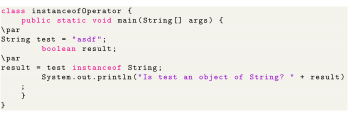

Next: Java instanceof Up: Operators Previous: Example Contents
In addition to relational operators, there is also a type comparison operator instanceof which compares an object to a specified type. For example,

The output for above code will be Is test an object of String? true. Here, since the variable test is of String type. Hence, the instanceof operator returns true.